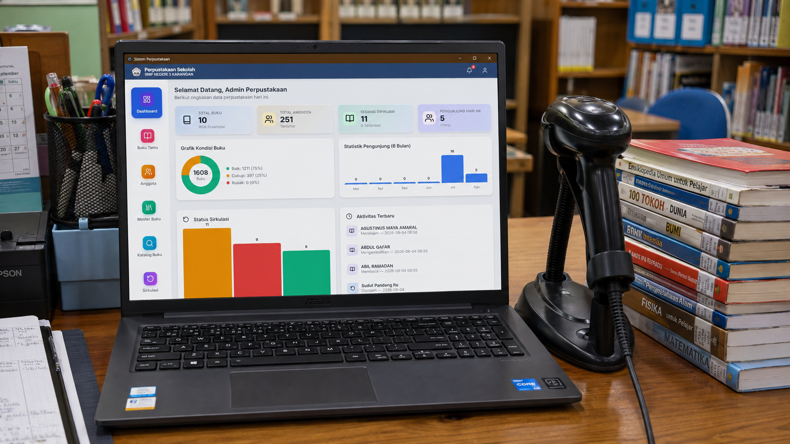
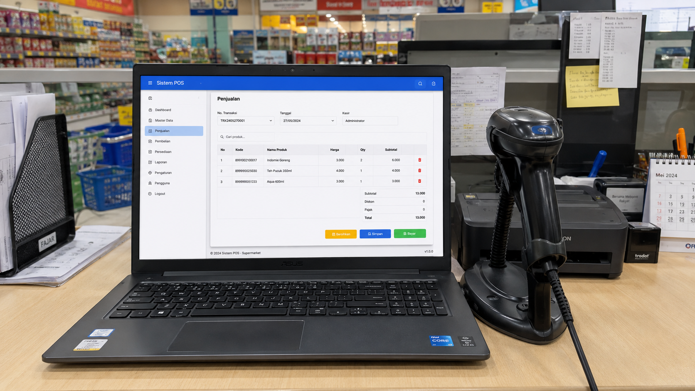
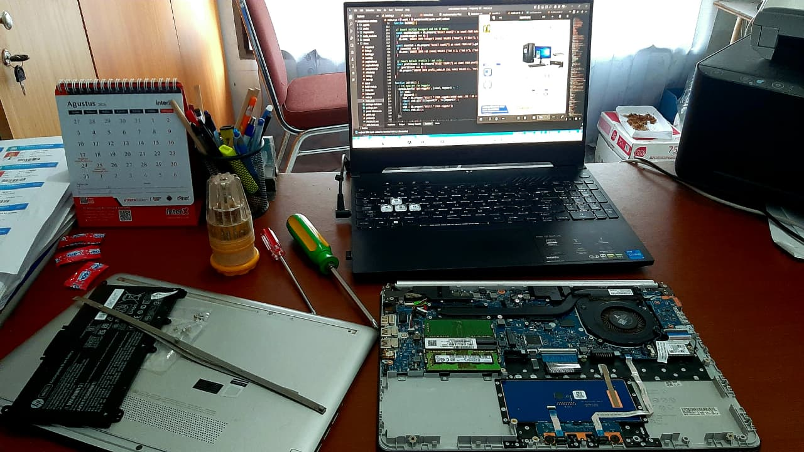

Perangkat rewel?
Kami turun tangan,
cepat & tuntas.
Perbaikan komputer, printer, dan jaringan dengan teknisi berpengalaman — plus jasa pembuatan aplikasi desktop & web untuk bisnis yang ingin naik level.
Empat jalur bantuan, satu tim yang sama.
Dari komputer yang blue screen sampai jaringan kantor yang lambat — kami petakan masalahnya, lalu selesaikan.
Perbaikan Komputer
- Perbaikan PC / All in One
- Instalasi & upgrade hardware
- Instalasi software (Windows & aplikasi)
- Bersihkan virus & optimasi sistem
- Atasi blue screen / booting error
Perbaikan Printer
- Printer tidak mau print / paper jam
- Hasil print bergaris / putus-putus
- Reset & maintenance printer
- Isi ulang tinta & penggantian sparepart
Pemasangan Jaringan
- Instalasi & konfigurasi LAN / Wi-Fi
- Setting router, access point, switch
- Sharing internet, file & printer
- Troubleshoot koneksi lambat / putus
Aplikasi Desktop & Web
- Aplikasi bisnis custom, sesuai kebutuhan
- Akses via browser maupun desktop
- Responsif di laptop, tablet, smartphone
- Dilengkapi sistem keamanan data
Empat langkah, dari keluhan sampai selesai.
Konsultasi
Sampaikan masalah perangkat Anda ke tim kami.
Cek & Diagnosa
Kami periksa dan pastikan akar permasalahannya.
Perbaikan
Proses perbaikan dikerjakan oleh teknisi berpengalaman.
Uji & Selesai
Diuji ulang sampai dipastikan berfungsi normal.
Satu aplikasi, seluruh operasional bisnis.
Dashboard interaktif, multi-device, dan bisa dikustom penuh — desain, branding, sampai integrasi ke sistem lain yang sudah Anda pakai.
Studi Kasus & Portofolio.
Beberapa sistem perangkat lunak yang kami kembangkan serta pengerjaan perbaikan perangkat keras keras untuk klien kami.

Manajemen AdministrasiSistem Administrasi Perpustakaan
Aplikasi untuk mengelola data buku, proses peminjaman, serta melacak rekam jejak aktivitas sirkulasi dan statistik perpustakaan sekolah/publik secara efisien.

POS & InventorySistem Kasir (POS)
Sistem Point of Sale (POS) modern yang terintegrasi dengan pemindai barcode, mempermudah manajemen transaksi, inventaris produk, dan pelaporan keuangan.

Hardware IT SupportPerbaikan Laptop & Hardware
Proses penanganan, perbaikan, dan penggantian komponen (sparepart) pada laptop dan printer secara transparan, langsung ke akar permasalahannya tanpa drama.
Kepercayaan yang Terjaga.
Servis komputernya sangat cepat dan transparan. Teknisi datang langsung ke kantor, cek masalah jaringan, dan hari itu juga internet lancar lagi.
Sistem POS buatan NIC sangat mudah digunakan kasir kami. Laporan penjualan harian bisa dipantau langsung dari HP saya. Sangat puas!
Printer kasir error saat toko sedang ramai. Untung bisa panggil teknisi NIC, penanganan daruratnya luar biasa sigap.
Empat alasan klien tetap kembali.
Cepat
Pengerjaan gesit agar aktivitas Anda tidak lama tertunda.
Aman
Data Anda tetap terjaga selama proses perbaikan berlangsung.
Profesional
Teknisi berpengalaman yang siap membantu kapan pun dibutuhkan.
Terjangkau
Harga kompetitif tanpa mengorbankan kualitas hasil kerja.
Perangkat bermasalah?
Kami
solusinya.
Layanan panggilan ke lokasi Anda, garansi servis hingga 30 hari. Hubungi sekarang untuk respons cepat.
Kunjungi atau hubungi lokasi kami.
Butuh servis langsung di tempat? Cek titik lokasi kami di Google Maps atau ajukan panggilan teknisi ke lokasi Anda.
NIC Computer Solutions
1.2498163537951283, 117.74841339062569Berbasis di Kabupaten Kutai Timur, siap melayani perbaikan komputer, printer, jaringan, hingga pembuatan aplikasi bisnis — kunjungi lokasi kami atau minta teknisi datang ke tempat Anda.